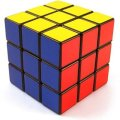

Game over

Hier j’ai acheté un Rubik’s cube et j’ai appris à le résoudre. Plus qu’une lubie de geek c’est une revanche sur le cube qui a nargué mes années d’enfance. Je m’en souviens encore, c’était un cube aux couleurs de l’équipe de France de foot de l’époque. Il y avait Platini, Tigana, Giresse, Hidalgo, tous mélangés… j’y ai passé des heures, des jours peut-être, mais je ne l’ai jamais résolu. Je n’en rougis pas, j’avais six ans. Mais le fait est que je m’en souviens très bien. Souvenir alimenté au fil des années par les rencontres occasionnelles, chez des amis, de cubes mélangés qui me faisaient le même effet qu’un haltère de cinq-cent kilos… Alors quand il y a quelques semaines, au détour d’Internet, j’ai vu ces champions qui résolvent le cube en une poignée de secondes, j’ai eu envie de prendre ma revanche. Pas de battre un record, non, mais de connaître la solution. De vaincre enfin ce cube.
C’est fait. Mon premier sujet de philo, en terminale, était « Comment comprendre l’expression ‘Ne pas vouloir mourir idiot’ ? »… Je ne suis pas devenu plus intelligent, mais j’ai appris quelque chose, j’ai trouvé la clef d’une porte qui m’avait bloqué, il y a longtemps déjà. Un peu comme si j’avais pu réparer un regret. Juste « un peu comme » car ce n’était pas vraiment un regret : à l’époque j’aurais voulu, mais je n’aurais pas pu. De façon générale j’ai très peu de regrets parce que j’y fais attention : lorsque je veux quelque chose, je fais ce que je peux pour l’avoir, même si je dois me faire violence pour refuser l’inertie. Mais parfois on ne peut simplement pas. On ne le sait qu’après donc il faut essayer quand même, mais ça ne marche pas. Ça arrive, il faut savoir l’accepter. Cependant il arrive aussi qu’avec le temps les conditions changent, et plusieurs années après, alors qu’on est devenu mieux informé, ou plus sûr de soi, plus disponible, l’inaccessible d’hier parvient enfin à portée de main. Alors autant il faut savoir tourner la page et ne pas s’enfermer dans un tel espoir quand on trouve une porte fermée, autant il est rafraîchissant de constater que, parfois, on peut ainsi « rattraper le temps perdu ».
Peut-être qu’un jour je me remettrai au Japonais, que je parviendrai à faire trente tractions, que je finirai un livre inachevé. Il me reste en tout cas beaucoup à vivre, et les limites d’hier ne sont pas nécessairement celles de demain. En attendant, j’ai résolu le cube…